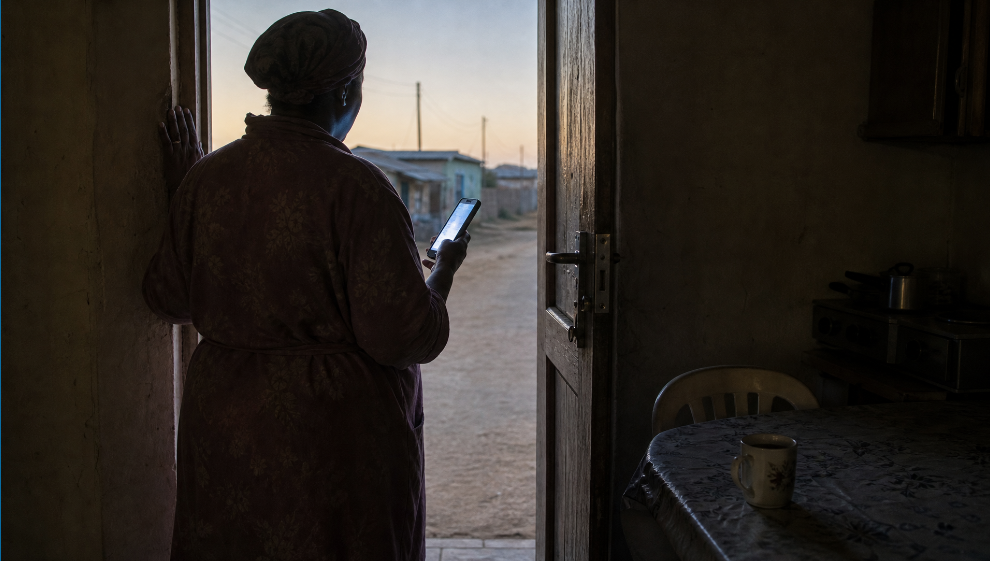

Safeband
In South Africa, a child is reported missing every five hours.

Now Reimagining Child Safety with Safeband
According to Missing Children SA, about 77% of reported children are found. That means roughly 23% remain unaccounted for.
Safeband aims to help protect children during their journey to school. It gives parents and guardians real-time updates from the moment a child leaves home until they arrive at their learning environment.
The solution offers more than location tracking. It can monitor basic health information, such as heart rate, which may help flag signs of stress or illness. It also aims to speed up the process of reporting a missing child to the South African Police Service (SAPS), with social media sharing options to help raise awareness.


AI Generated
Application Interface design
Approach and thinking process

Conclusion
Safeband cannot fix poor public infrastructure or unregulated transport. It can, however, ease some of the anxiety parents and guardians feel while their children travel to school. Scholar patrols and road safety programmes remain essential, and community members should be encouraged to take part. Children’s safety is a shared responsibility; technology is one tool that can help us fulfil it.